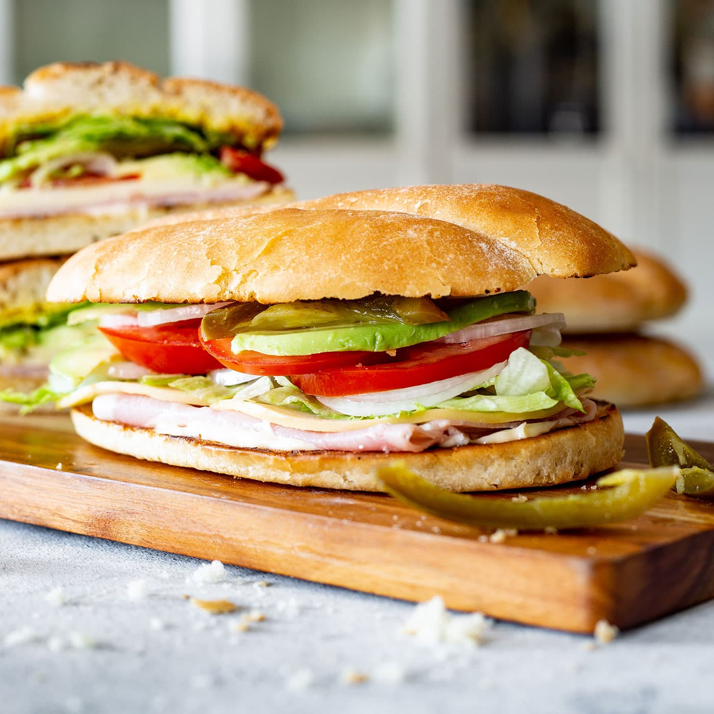

Torta Recipe

Description
Want a quick bite that stands out from all the other lunch options? A torta is similar to the common sandwich we all know in love but with its own unique Mexican kick!
Ingredients
- 1 telera or bolillo, sliced in half
- 1 tablespoon mayonnaise
- 2 slices ham
- 2 slices tomatoes
- 1 leaf lettuce thinly sliced
- pickled jalapeños as many as you like
- avocado slices